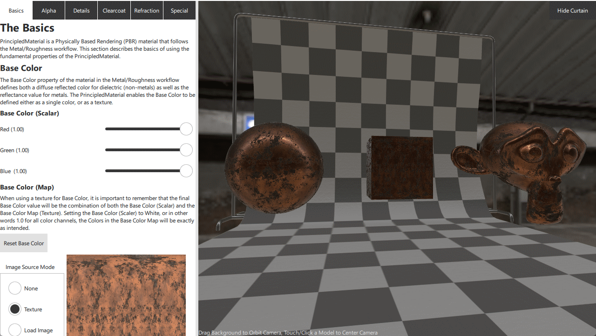

Qt Quick 3D - Principled Material Example
Demonstrates the use of Principled Material.

This example serves as interactive documentation for the usage of PrincipledMaterial. Each property of PrincipledMaterial comes with some explanation of how it is used as well as a way to experiment with adjusting each property.
Usage
This example is split into two views, the interactive documentation and controls on the left, and the 3D Viewer on the right. The 3D Viewer is interactive allowing the camera to be orbited around the target model. To reset the focus on a particular model, just touch or click the model to focus on. The split between the two views is resizable by dragging bar in between the views.
The example is separated into multiple sections which group the various features of PrincipledMaterial into manageable chunks. Each section can be accessed by clicking on the tabs at the top of the explanation area.
SpecularGlossyMaterial
In addition to demonstrating the Metalness/Roughness PBR workflow provided by PrincipledMaterial it is possible to switch to using the Specular/Glossy workflow which uses the SpecularGlossyMaterial. This can be done by a switch in the Basics section.
Resource Loader
The more complex nature of this example also gives an opportunity to demonstrate the usage of the ResourceLoader component. When a model is no longer visible in the scene any resources associated with the model will be released by Qt Quick 3D (assuming none of the resources are used by other models in the scene.) In this example it is possible to hide the curtain model, and by doing so 2 meshes and 2 texture would be released from GPU memory. The next time the curtain is made visible though, these resources would need to be re-uploaded to the GPU. On some hardware this uploading can causes a momentary drop in frame-rate, so to mitigate this a ResourceLoader component is used inside of the BackgroundCurtain component.
ResourceLoader { meshSources: [ frame.source, curtain.source ] textures: [ tilePatternTexture, curtainNormalTexture ] } Model { id: frame z: -1.95 source: "meshes/frame.mesh" PrincipledMaterial { id: frame_material baseColor: "#ffcccccc" metalness: 1 roughness: 0.259091 alphaMode: PrincipledMaterial.Opaque } materials: [ frame_material ] } Model { id: curtain y: 3.02413 z: 2.04922 source: "meshes/curtain.mesh" PrincipledMaterial { id: curtain_material baseColorMap: Texture { id: tilePatternTexture source: "maps/tilepattern.png" generateMipmaps: true mipFilter: Texture.Linear } opacityChannel: Material.A roughness: 0.5 normalMap: Texture { id: curtainNormalTexture source: "maps/curtain_normal.jpg" generateMipmaps: true mipFilter: Texture.Linear } cullMode: Material.NoCulling alphaMode: PrincipledMaterial.Opaque } materials: [ curtain_material ] }
Here both the mesh files and textures are registered with a ResourceLoader. ResourceLoader will assure that any registered resources will always be ready for use in GPU memory, so now regardless of the visibility of the BackgroundCurtain, its resources will be preserved.
The ResouceLoaded can also be used to preload resources, as shown with the point and line meshes under the "Special" tab.
ResourceLoader { meshSources: [ "meshes/logo_lines.mesh", "meshes/logo_points.mesh" ] }
Here the QUrl's of the mesh files are listed directly. Resources do not have to be associated with a Model to be used by a ResourceLoader.
Files:
- principledmaterial/AlphaPane.qml
- principledmaterial/BackgroundCurtain.qml
- principledmaterial/BasicsPane.qml
- principledmaterial/CMakeLists.txt
- principledmaterial/ClearcoatPane.qml
- principledmaterial/DemoPane.qml
- principledmaterial/DetailsPane.qml
- principledmaterial/Example/AlphaPane.qml
- principledmaterial/Example/BackgroundCurtain.qml
- principledmaterial/Example/BasicsPane.qml
- principledmaterial/Example/ClearcoatPane.qml
- principledmaterial/Example/DetailsPane.qml
- principledmaterial/Example/MarkdownLabel.qml
- principledmaterial/Example/RefractionPane.qml
- principledmaterial/Example/SpecialPane.qml
- principledmaterial/Example/TextureSourceControl.qml
- principledmaterial/Example/VerticalSectionSeparator.qml
- principledmaterial/Example/main.qml
- principledmaterial/Example/principledmaterial_qml_module_dir_map.qrc
- principledmaterial/Example/qmldir
- principledmaterial/MarkdownLabel.qml
- principledmaterial/RefractionPane.qml
- principledmaterial/SpecialPane.qml
- principledmaterial/TextureSourceControl.qml
- principledmaterial/VerticalSectionSeparator.qml
- principledmaterial/assets.qrc
- principledmaterial/imagehelper.cpp
- principledmaterial/imagehelper.h
- principledmaterial/main.cpp
- principledmaterial/main.qml
- principledmaterial/principledmaterial.pro
- principledmaterial/qml.qrc
Images:
- principledmaterial/Example/maps/alpha_gradient.png
- principledmaterial/Example/maps/curtain_normal.jpg
- principledmaterial/Example/maps/grid.png
- principledmaterial/Example/maps/metallic/basecolor.jpg
- principledmaterial/Example/maps/metallic/metallic.jpg
- principledmaterial/Example/maps/metallic/normal.jpg
- principledmaterial/Example/maps/metallic/roughness.jpg
- principledmaterial/Example/maps/monkey_ao.jpg
- principledmaterial/Example/maps/monkey_thickness.jpg
- principledmaterial/Example/maps/noise.png
- principledmaterial/Example/maps/normal_stamp.png
- principledmaterial/Example/maps/small_envmap.jpg
- principledmaterial/Example/maps/tilepattern.png
- principledmaterial/maps/alpha_gradient.png
- principledmaterial/maps/curtain_normal.jpg
- principledmaterial/maps/grid.png
- principledmaterial/maps/metallic/basecolor.jpg
- principledmaterial/maps/metallic/metallic.jpg
- principledmaterial/maps/metallic/normal.jpg
- principledmaterial/maps/metallic/roughness.jpg
- principledmaterial/maps/monkey_ao.jpg
- principledmaterial/maps/monkey_thickness.jpg
- principledmaterial/maps/noise.png
- principledmaterial/maps/normal_stamp.png
- principledmaterial/maps/small_envmap.jpg
- principledmaterial/maps/tilepattern.png
{kind=link}
{kind=link}
{kind=link}
{kind=link}
{kind=link}
{kind=link}
{kind=link}
{kind=link}
{kind=link}
{kind=link}
{kind=link}
{kind=link}
{kind=link}
{kind=link}
{kind=link}
{kind=link}
{kind=link}
{kind=link}
{kind=link}
{kind=link}
{kind=link}
{kind=link}
{kind=link}
{kind=link}
{kind=link}
{kind=link}